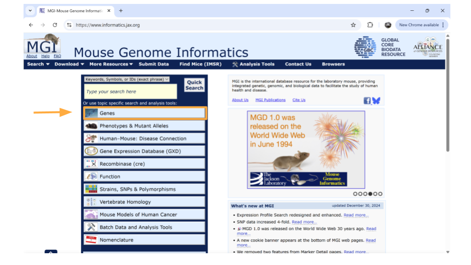
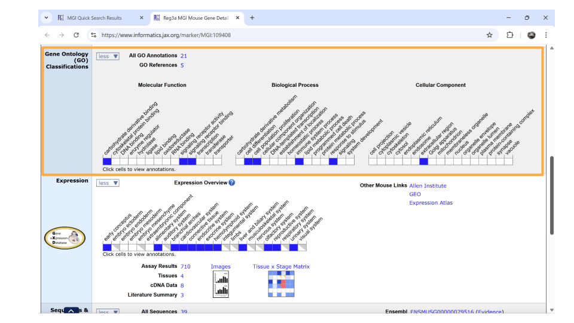

Differential Expression with RNA-seq
This module is a companion and expansion to the C-MOOR RNA-seq miniCURE. You can find out more about the RNA-seq miniCURE and other C-MOOR activities at the C-MOOR website. An online guide to the miniCURE is here.
Each chapter introduces an RNA-seq dataset from a published research paper. The datasets have been formatted for student use.
Gut-brain axis: Autism Spectrum Disorder
This dataset includes gene expression data from two different brain regions (striatum and prefrontal cortex) in mice. Mice in this experiment received fecal transplants. Some mice received transplants from humans who have been diagnosed with Autism Spectrum Disorder (ASD), while other mice received transplants from humans who did not have any diagnosis (control). This allowed researchers to control the composition of the gut microbiome in each mouse. Researchers then bred the mice and looked for differences in gene expression in the brains of the offspring.
The mouse as a model organism
The mouse is the most commonly-used model organism in laboratory work. In fact, mice and rats make up 95% of the lab animal population, and more than 80% of the research that has been awarded the Nobel Prize for Medicine was done at least in part with mouse models.
So what makes mice such good model organisms for biomedical research? Well, first, they’re economical and relatively easy to keep. Since mice are small, they don’t require a huge amount of space or food. They also have fast reproductive cycles, so researchers can study multiple generations within only a few years. Most importantly, though, mice and humans are both mammals and have about 85% of their protein-coding genome in common. As a result, mouse physiology is quite similar to human physiology. The mouse circulatory, reproductive, digestive, hormonal, and nervous systems are frequently used as models to study how humans grow, age, and develop chronic diseases. They are particularly important model organisms for cancer research and neuroscience.
You can find additional information about how the mouse is used in research here!
The original study
The original study, Gut Microbiota from Human Autism Spectrum Disorder Induces Behavioral Deficits in Mice, was published in 2019. Gut microbiota are known to be different between individuals with ASD and individuals who are considered typically-developing. Additionally, some individuals with ASD also experience gastrointestinal symptoms, and their gut microbiota show the greatest difference when compared to the gut microbiota of typically-developing individuals. Some researchers have proposed that gut bacteria can influence some of the symptoms of ASD. The relationship between the intestinal microbiome and the development and function of the human brain is known as the gut-brain axis.
In this study, researchers explored whether they could induce ASD-like behaviors in mice by changing their gut microbiome. They transplanted stool from either humans with ASD or controls into germ-free mice and discovered that colonization with gut microbiota was enough to induce ASD-like behaviors in the mice. They also let the mice breed and collected gene expression data from the brains of their offspring to explore whether changing the gut microbiota could result in changed gene expression. In particular, they discovered that the offspring of mice who received stool from ASD donors showed different gene splicing and expression profiles of certain ASD-relevant genes.
It is important to note that researchers are not suggesting that ASD is entirely induced by gut bacteria. There is a strong genetic component to ASD. Scientists have known for years that there are both genetic and environmental components to the development or severity of some ASD symptoms. This research explores one possible environmental component.
You can read the original research paper here.
What comparisons can I make?
In this dataset, you have the option to look at gene expression in control vs ASD mice, as well as gene expression in both striatum and prefrontal cortex. All the mice were male and sacrificed at the same age (45 days).
Additionally, you can look at gene expression in striatum vs prefrontal cortex in only ASD mice or only control mice. Likewise, you also have the option of looking at gene expression in ASD and control mice, focusing only on striatum or only on prefrontal cortex.
Autism spectrum disorder is a neurological disorder that affects behavioral and social interactions, among other things. Although ASD can be diagnosed at any age, it’s considered a neurodevelopmental disorder because symptoms usually show up within the first two years of life. Individuals diagnosed with ASD can experience a wide range of symptoms, including differences in social behaviors and communication styles, as well as intellectual disabilities and physical issues like sensory sensitivities or gastrointestinal problems.
The striatum is part of the brain involved in motor control and cognitive tasks like reward processing, decision-making, and social interactions (often called executive functions). It lies deep within the center of the brain and is composed of both gray matter (which can be thought of as the “processing” part of brain tissue) and white matter (which is the brain structure involved in transporting messages); the combination of the gray and white matter give this region of the brain a striped appearance, resulting in the name “striatum”. The striatum is involved in both reflexive movement - that is, involuntary movement that happens as an immediate response to a stimulus - and slower, planned movement like walking. In Parkinson’s disease, some patients experience degeneration of parts of the striatum, resulting in spastic, uncontrollable movement.
The prefrontal cortex is the part of the brain that is primarily in charge of decision making, reasoning, personality, maintaining social appropriateness, and other complex behaviors that fall under the umbrella of executive functions. This can include planning, self-control, and working towards long-term goals. The prefrontal cortex is located in the very front of the brain, just behind your forehead. One of the most famous brain injury patients was Phineas Gage, a railroad worker who survived an iron rod through his forehead. His prefrontal cortex was destroyed in this accident, and doctors noted huge behavioral and personality changes. You can read more about his case here
Learning about mouse genes
In this dataset, genes are identified using their Ensembl Gene ID code. Every gene will have an ID that looks something like this:
ENSMUSG00000000001
ENS stands for “Ensembl”. Ensembl is a genome database project managed by the European Bioinformatics Institute. It’s one of several databases like this. Others include NIH’s National Center for Biotechnology Information (NCBI; the organization that manages GenBank and PubMed) and the University of California, Santa Cruz (UCSC) Genome Browser. When a gene code starts with “ENS”, it means you should look up the gene code in the Ensembl database.
MUS stands for “Mus”, which is the genus for the mouse.
G stands for “Gene”. When you see “G” in the ID name, you know you are working with a gene. There are also codes for transcripts (“T”), exons (“E”), and proteins (“P”).
00000000001 is the numerical code associated with the gene.
You will need all four of these parts together to search for information about your mouse gene.
Mouse Genome Database
Just like FlyBase, there is a database that tracks mouse genes. This database is called Mouse Genome Informatics. A full introduction to everything available through the MGI can be found here. We’ll reproduce some of it below.
To look up information on a particular gene of interest, choose the “Genes” button.
Next, type the gene ID into the “Search” bar up top. We’ll look up “ENSMUSG00000079516”.

After you type the gene ID into the Search bar and hit enter, you should see a new page with basic information about the gene. Click on the gene symbol (in this example, Reg3a) to get more detailed information.

You might come across some unexpected terms when you search the MGI for your gene ID. In addition to genes, Ensembl gene IDs are also given to “pseudogenes”, “putative genes”, and “lncRNA”.
pseudogene: This is a stretch of DNA that looks like a gene but doesn’t actually code for any protein products. It’s essentially a copy of a gene that contains mutations that prevent translation into a protein product. The mutations can include partial deletions, missing promoters, missing start codons, premature stop codons, frameshift mutations, or missing introns. Any of these are enough to result in a pseudogene.
putative gene: This is a DNA segment that is believed to be a gene, but its function and protein product has not been confirmed. They are frequently identified based on the presence of an Open Reading Frame. Putative genes are not given names until they become confirmed genes.
lncRNA: This stands for “long non-coding RNA”. lncRNA is a type of RNA molecule that is transcribed from DNA but does not code for proteins. These RNA molecules are at least 200-500 nucleotides long and play roles in various biological processes, like gene regulation.
On the new page that you open, details about the gene are organized into familiar categories. Down the left-hand side of the page, you will see sections about the chromosomal location, homology, gene ontology, expression data, and more. Most sections are expanded by default, but you’ll need to expand the “homology” section yourself.

Once this section is expanded, you can find information about possible human homologs to the mouse gene, including alternate names and where the human homolog is located in the human genome.
If you continue scrolling down the page, you can also examine the pathways and processes the gene product is involved in under the “gene ontology” section. Clicking on the blue squares takes you to a page with more information about how that particular gene was assigned to a pathway or molecular process.

Directly underneath the “ontology” section is information about when the gene is expressed during development. You can learn more information by clicking on the blue squares, or by clicking on the links in the upper right-hand corner. These links will take you to other websites.

Activity
A separate Rmd file has been created for this activity. You can download it here. Once it’s downloaded, you should open it using RStudio.
Choose your dataset
You’ll first want to decide which dataset(s) you’ll use for your exploration.
Gut-brain axis: Autism Spectrum Disorder in mice
Full gene expression data; no comparisons, just counts
Comparing gene expression between ASD and control mice
Comparing gene expression between prefrontal cortex and striatum
Loading the tidyverse package and the data
All the datasets for this activity can be loaded into R from their URL. In order to do this, we will use some code that has been saved in an R package called tidyverse. In order to use this code, we will need to install and open tidyverse using the R code chunk below.
install.packages retrieves and installs the package
library opens the package and makes the stored code available for you to use
install.packages("tidyverse")
library(tidyverse)Once you have installed and opened tidyverse, you should be ready to load the experimental data. You can do this using the read_csv command.
Let’s say you want to open one of the differential expression datasets and call it dat. The command would be:
dat <- read_csv(“URL where the dataset is stored”)
Try it!
Analysis
Before starting this activity, you should have completed the miniCURE activities and identified genes of interest for your individual project. Remember, the basic steps of your analysis are:
- Examine expression of your gene of interest expressed in this dataset.
- Explore whether your gene of interest is differentially expressed in different experimental groups.
- Characterize the genes that are differentially expressed between the experimental groups based on their molecular activity.
Code used in miniCURE exercises
Here’s a quick overview of some of the code you used in the lab exercises!
Exploring the dataframe
This lets you explore how the dataset is formatted and how big it is
head(readCounts) dim(readCounts)
Summarizing count data
These commands allow you to run basic statistics on a variable (column) in the dataset
summary(readCounts\(V2) sum(readCounts\)V2)
Plotting a histogram
A general histogram: hist(readCounts$V2, main=“Read Counts for Drosophila RNA-seq sample”)
A histogram with a log-transformed x-axis: hist(log10(readCounts$V2), main=“Log10 Read Counts for Drosophila RNA-seq sample”)
A histogram with a log-transformed x-axis and corrected zeros: hist(log10(readCounts$V2 + 0.1), main=“Log10 Read Counts for Drosophila RNA-seq sample with Zero Correction”)
Filtering out a specific gene
You might want to look at the expression of a specific gene
filter(readCounts_Cu, V1==“FBgn0002522”)
Creating a gene list
In order to run gene set analyses, you will need to create a list of genes to look at. You can use the filter command to choose a p-value cut off. Make sure to check that your gene list has enough genes on it (and that you have a good ratio of “real” positive versus false positive results).
sig_genes <- filter(a1_vs_p1, padj <= 0.05) dim(sig_genes)
Running a gene set analysis
You can use the special command runClusterProfiler to figure out the types of processes genes on your gene list are involved in. You can also create a dotplot to visualize your results.
a1_vs_p1_clusters <- runClusterProfiler(sig_genes)
dotplot(a1_vs_p1_clusters, showCategory=34, title=“a1 vs p1”, font.size=10, label_format = 50)
Plotting a single gene across regions
Finally, it might be interesting to look at the expression of a gene across all the possible regions. This is another special command that has been written for you.
plotAcrossRegions(“FBgn0000003”)
If you’re interested in plotting the genes with the lowest p-values, you can use the arrange command to sort the results first.
a1_vs_p1_sorted <- arrange(a1_vs_p1, padj) head(a1_vs_p1_sorted)